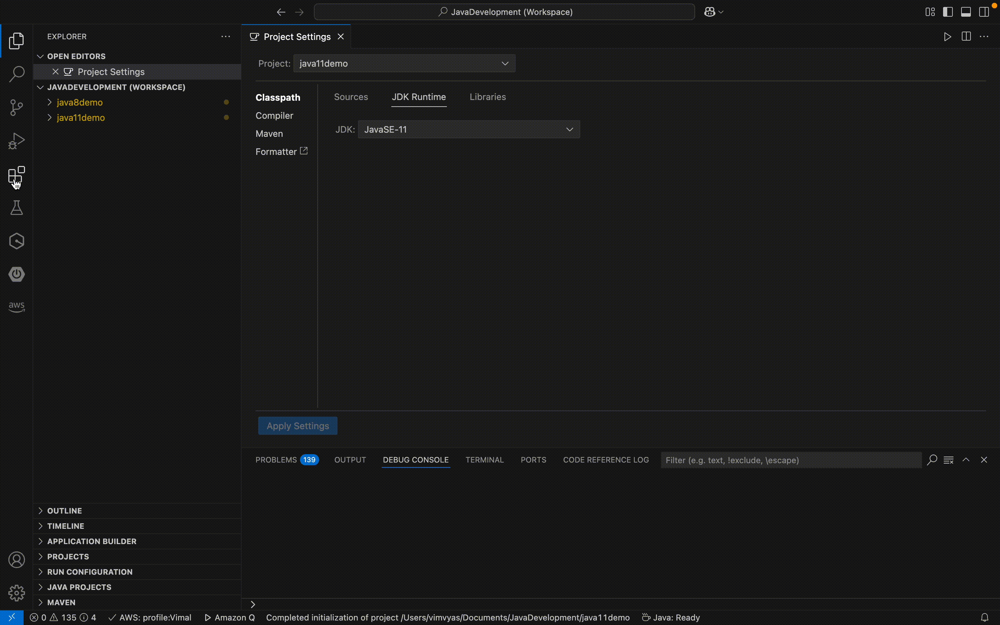
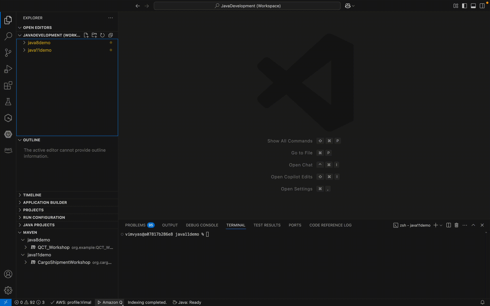

Blog 1
Hiện đại hóa ứng dụng Java với Amazon Q Developer và Visual Studio Code
Tác giả: Vimal Vyas và Shweta Singh – 01/04/2025 Amazon Q, Amazon Q Developer, AWS Java Development, DevOps, Technical How-to | PermalinkTheo thời gian, các tổ chức tiếp tục sử dụng các ứng dụng Java được xây dựng từ nhiều năm trước bằng các phiên bản Java Development Kit (JDK) cũ hơn. Điều này dẫn đến việc các ứng dụng chạy mã lỗi thời với các phụ thuộc lỗi thời. Sự kết hợp của các yếu tố này có thể dẫn đến lỗ hổng bảo mật, hiệu suất ứng dụng kém và các thách thức về bảo trì. Những thách thức này ngày càng khó quản lý trong các tổ chức chạy số lượng lớn ứng dụng Java. Các nhà phát triển đang tìm kiếm một môi trường phát triển hỗ trợ chạy các ứng dụng Java cũ với các JDK khác nhau; và các công cụ giúp tự động di chuyển ứng dụng sang phiên bản Java hiện tại, thay thế mã lỗi thời và sửa các phụ thuộc bị thiếu.
Vào tháng 4 năm 2024, Amazon Web Services (AWS) đã công bố Amazon Q Developer: Transform for Java chính thức ra mắt . Vào ngày 14 tháng 2 năm 2025, Amazon Q Developer đã công bố hỗ trợ nâng cấp lên Java 21. Với bản phát hành này, Amazon Q Developer: Transform bổ sung tính năng chuyển đổi chỉ bằng một cú nhấp chuột các ứng dụng Java 8 và Java 11 cũ sang Java 21.
Tổng quan về giải pháp
Giải pháp bao gồm các bước sau để thiết lập môi trường phát triển của bạn: 1.Cấu hình Visual Studio Code với nhiều JDK và Maven 2.Tích hợp Visual Studio Code với Amazon Q Developer: Transform Sau khi môi trường phát triển được thiết lập, bạn có thể sử dụng tính năng Amazon Q Developer: Transform để chuyển đổi ứng dụng Java 8 hoặc Java 11 sang Java 21.
Thiết lập môi trường phát triển
Cấu hình Visual Studio Code với nhiều JDKs
Trong VSCode, chọn View/Command Palette, sau đó chọn Java: Configure Java runtime và tải về các phiên bản JDK 8, 11, và 21. Tùy chọn: sử dụng Amazon Corretto để tải nhiều phiên bản JDK. Amazon Corretto là một bản phân phối OpenJDK miễn phí, đa nền tảng và sẵn sàng cho môi trường production.

Để cài đặt plugin Maven, mở VSCode Extensions, tìm hoặc chọn Maven for Java và bấm Install. 
Bây giờ, hãy thêm các ứng dụng Java được xây dựng trên Java 8 và Java 11 vào không gian làm việc VSCode. Chúng tôi đang sử dụng các ứng dụng demo Java mẫu được phát triển với các phiên bản Java 8 và Java 11 cho hướng dẫn này. Hãy đảm bảo rằng tệp pom.xml trỏ đến phiên bản Java tương ứng như trong hình ảnh sau.

Tích hợp Visual Studio Code với Amazon Q Developer: Transform
Amazon Q Developer cung cấp khả năng tích hợp với nhiều môi trường phát triển tích hợp (IDE) và VSCode là một trong số đó. Hãy làm theo tài liệu hướng dẫn của AWS để tích hợp VSCode với Amazon Q Developer .
Chuyển đổi ứng dụng Java
Chuyển đổi Java 8 sang Java 21
Các bước sau đây sẽ hướng dẫn bạn thực hiện chuyển đổi mã:
- Chọn Amazon Q trên thanh điều hướng ở bảng điều khiển phía dưới của VSCode.
- Sau đó, chọn “Open Chat panel” từ bảng lệnh. Trong bảng điều khiển trò chuyện, nhập /transform rồi chọn dự án Java 8 cần chuyển đổi.
- Bây giờ chọn phiên bản mã nguồn là 8 và phiên bản mã đích là 21. Chọn Xác nhận.
- Một cửa sổ bật lên sẽ mở ra với tiêu đề " Choose to skip unit tests" , chọn “Skip unit tests” và chọn “Confirm” . Chúng tôi sẽ bỏ qua unit test vì có một giới hạn kỹ thuật yêu cầu dự án phải có khả năng xây dựng và hoàn thành các bài kiểm tra trong vòng 55 phút.
- Một cửa sổ bật lên mới sẽ mở ra và cung cấp các tùy chọn để chọn cách nhận các thay đổi được đề xuất. Cửa sổ này cung cấp các tùy chọn Một Khác Biệt (One Diff) và Nhiều Khác Biệt (Multiple Diff). Chọn Một Khác Biệt (One Diff) cho các chuyển đổi quy mô nhỏ hơn với các thay đổi mã có thể quản lý được.
- Một cửa sổ bật lên cuối cùng sẽ mở ra để cung cấp lệnh tìm đường dẫn JDK. Chạy lệnh trong một terminal mới và sau đó nhập đường dẫn đến JDK 8. Sau khi nhập đường dẫn JDK, Amazon Q sẽ bắt đầu xây dựng dự án của bạn. Quá trình này có thể mất đến 10 phút tùy thuộc vào quy mô dự án của bạn.

Xem lại kế hoạch Transformation
Sau khi Amazon Q Developer tải lên và biên dịch mã của bạn trong môi trường biên dịch an toàn, nó sẽ tạo ra một kế hoạch chuyển đổi. Kế hoạch chuyển đổi này hiển thị chi tiết mã Java, bao gồm các dòng mã, các phụ thuộc cần thay thế, các phiên bản mã Java 8 đã lỗi thời và số lượng tệp cần thay đổi.

Xem lại Transformation Summary
Sau khi hoàn tất quá trình chuyển đổi, Amazon Q Developer sẽ tạo một bản tóm tắt chuyển đổi chi tiết, liệt kê các phụ thuộc, các phiên bản mã Java 8 đã lỗi thời và danh sách tất cả các tệp đã thay đổi. Các phiên bản mã lỗi thời sau đây đã được Amazon Q Developer thay thế.

Amazon Q Developer tóm tắt các thay đổi được đề xuất trong tab “Thay đổi được đề xuất”, mở ra sau khi quá trình chuyển đổi hoàn tất. Để chấp nhận các thay đổi do Amazon Q thực hiện, hãy vào tab “Thay đổi được đề xuất” và chọn “Chấp nhận”

Chuyển đổi Java 11 sang Java 21
Quy trình tương tự như trên, chỉ khác ở bước chọn Java 11 làm source version. Bao gồm: · Lựa chọn dự án và thông số kỹ thuật phiên bản · Xây dựng thiết lập môi trường · Xem xét kế hoạch chuyển đổi · Chấp nhận những thay đổi cuối cùng
Kiểm thử đơn vị
Các doanh nghiệp cũng phải đối mặt với những thách thức như tỷ lệ lỗi cao, vấn đề chất lượng và chu kỳ phát triển dài cho các tính năng và ứng dụng mới. Amazon Q Developer giúp các nhóm phát triển cải thiện năng suất bằng cách tự động hóa các tác vụ thông thường và giảm thiểu nợ kỹ thuật tích lũy thông qua tính năng /test.
Tính năng /test trong Amazon Q Developer là một chức năng tạo bài kiểm tra đơn vị tự động, giúp các nhà phát triển tạo ra các bộ kiểm tra toàn diện. Sau đây là một ví dụ về cách tạo một bài kiểm tra đơn vị:

Để chạy thử nghiệm, hãy điều hướng đến tab Kiểm tra và chọn lớp kiểm tra Java đã tạo. Từ tab kiểm tra này, bạn có toàn quyền kiểm soát để chạy bất kỳ thử nghiệm nào, dù là một trường hợp kiểm tra đơn lẻ hay nhiều trường hợp kiểm tra.
Lợi ích và tác động
Amazon Q Developer đóng vai trò là trợ lý AI mạnh mẽ giúp chuyển đổi và hiện đại hóa quá trình phát triển phần mềm trong toàn bộ vòng đời, mang lại những lợi ích sau – · Đẩy nhanh quá trình hiện đại hóa mã · Đơn giản hóa việc quản lý sự phụ thuộc · Giảm nợ kỹ thuật · Nâng cao hiệu suất ứng dụng · Đơn giản hóa việc bảo trì
Phần kết luận
Amazon Q Developer Agent for Code Transformation (QCT) for Java giúp hiện đại hóa các ứng dụng Java cũ nhanh hơn và hiệu quả hơn. Công cụ này chuyển đổi các hệ thống lỗi thời sang các framework hiện tại và triển khai chúng dưới dạng ứng dụng đám mây gốc trên AWS. Quy trình này giảm thiểu công sức, rủi ro và nhu cầu bảo trì liên tục. Bằng cách sử dụng Amazon Q Developer, bạn sẽ tiết kiệm thời gian và nguồn lực trước đây dành cho việc quản lý nợ kỹ thuật, cho phép nhóm của bạn tập trung vào đổi mới và cải tiến các ứng dụng mới được hiện đại hóa.
Như đã trình bày trong bài viết này, các nhà phát triển có thể chuyển đổi nhiều ứng dụng Java được xây dựng trên các phiên bản JDK khác nhau bằng Amazon Q Developer và VSCode. Các nhà phát triển cũng có thể tận dụng tính năng /test của Amazon Q Developer để nhanh chóng tạo các trường hợp kiểm thử đơn vị. Công cụ này giúp giảm thiểu độ phức tạp và thời gian cần thiết để hiện đại hóa các ứng dụng Java cũ, cho phép các nhà phát triển tập trung vào đổi mới thay vì bảo trì.